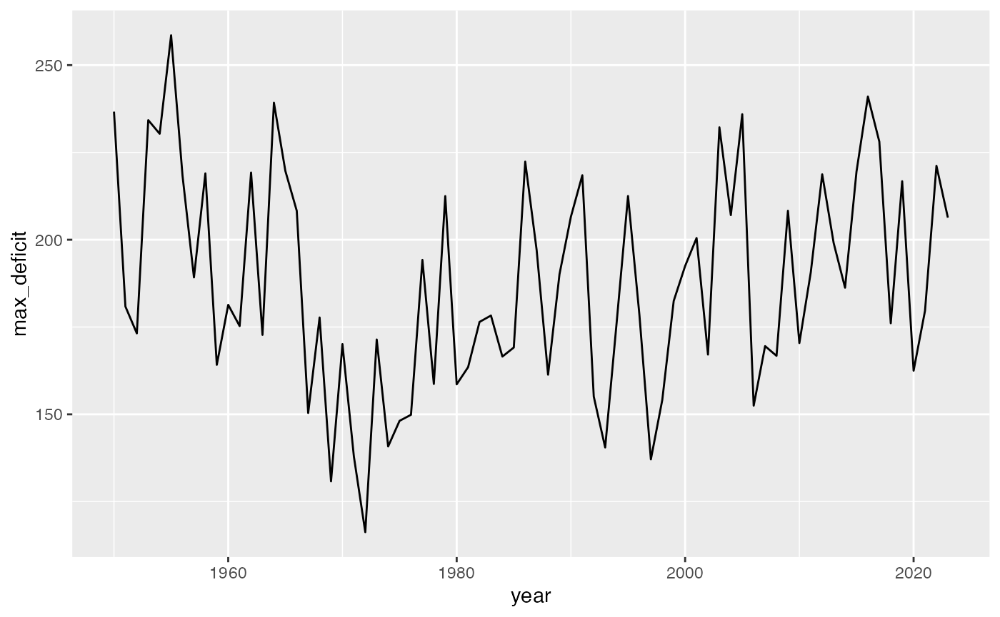
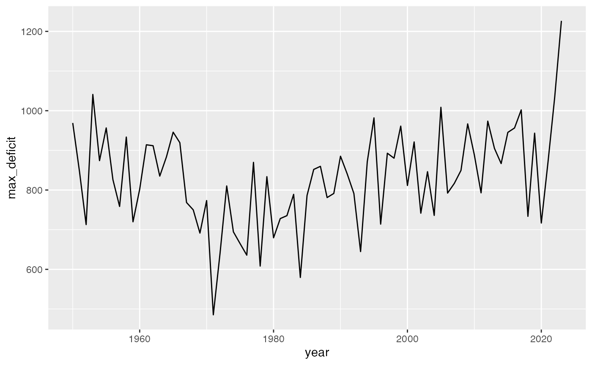
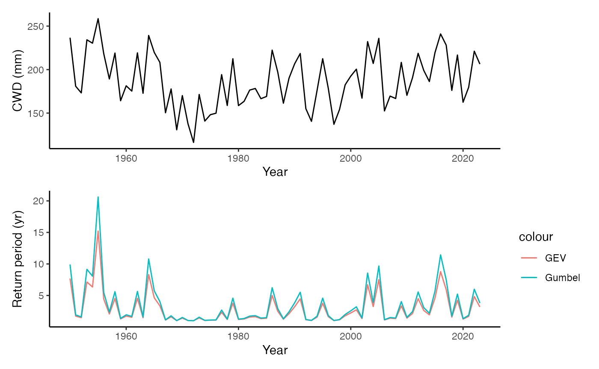
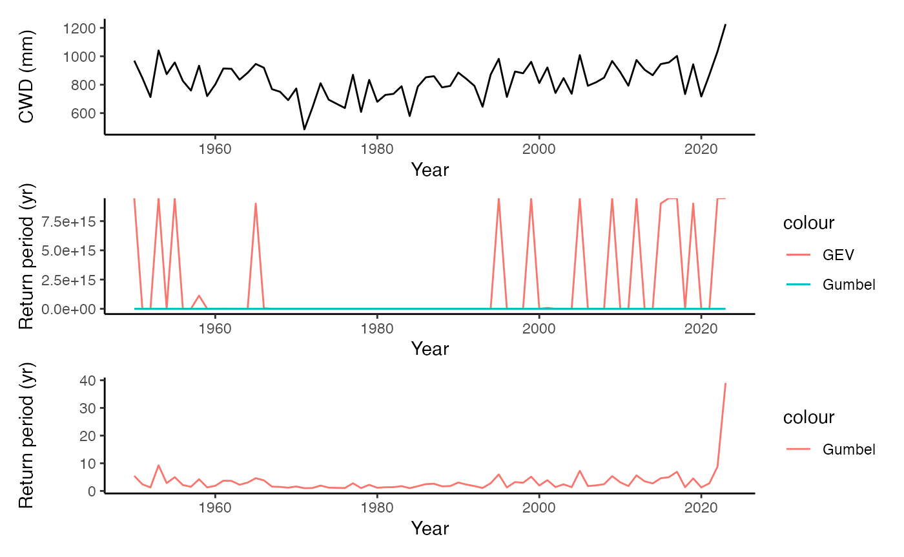
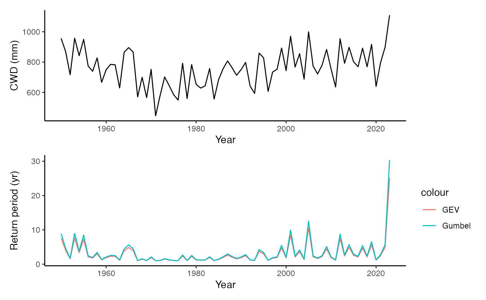
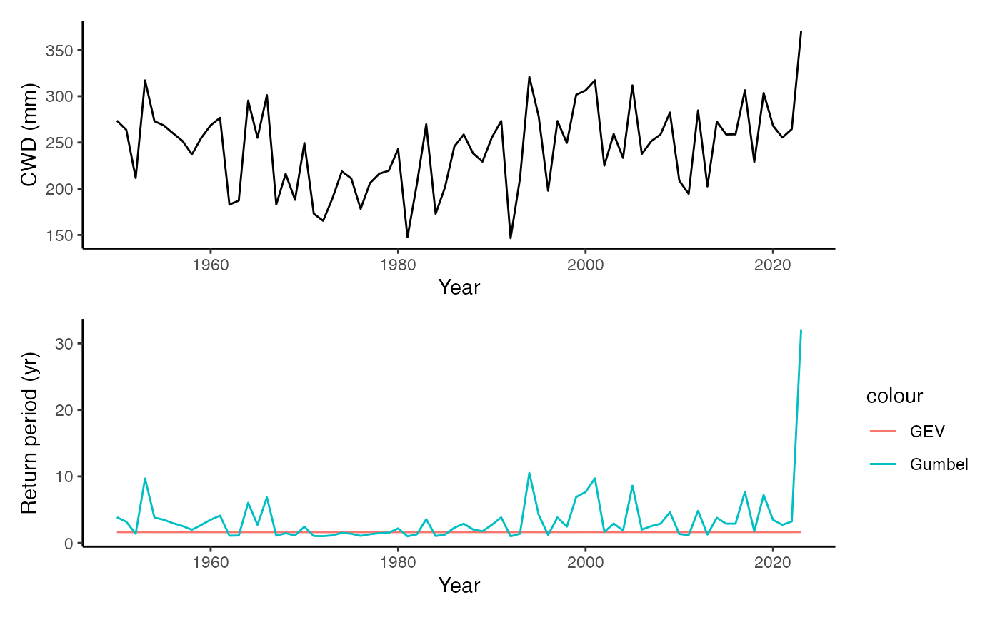

##
## Attaching package: 'dplyr'## The following objects are masked from 'package:stats':
##
## filter, lag## The following objects are masked from 'package:base':
##
## intersect, setdiff, setequal, union## Loading required package: Lmoments## Loading required package: distillery##
## Attaching package: 'extRemes'## The following objects are masked from 'package:stats':
##
## qqnorm, qqplot## here() starts at /Users/benjaminstocker/cwd_era5-stinebThe data
Example data for four pixels
Create pixel ID and nest data by pixel.
df <- df_cwd |>
mutate(
site = paste0("lon", as.character(lon), "_lat", as.character(lat))
) |>
group_by(site) |>
nest()Visualise CWD maxima for two pixels.


Fit extreme value distributions
Define some useful functions.
# function to fit extreme value distribution
get_evd <- function(df, type = "GEV"){
vals <- df |>
pull(max_deficit)
extRemes::fevd(
x = vals,
type = type,
method = "MLE",
units = "years"
)
}
return_period <- c(2, 5, 10, 20, 30, 40, 50, 60, 70, 80, 90, 100)
# function to calculate return periods of each year in observations
get_return_periods <- function(df, mod){
vals <- df |>
pull(max_deficit)
calc_return_period(
vals,
extract_loc(mod),
extract_scale(mod)
)
}
calc_return_period <- function(x, loc, scale){
1 / (1 - exp(-exp(-(x-loc)/scale)))
}
extract_loc <- function(mod){
loc <- mod$results$par[ "location" ]
if (!is.null(loc)){
return(loc)
} else {
return(NA)
}
}
extract_scale <- function(mod){
scale <- mod$results$par[ "scale" ]
if (!is.null(scale)){
return(scale)
} else {
return(NA)
}
}Fit.
df <- df |>
# # example for one pixel
# ungroup() |>
# slice(1) |>
mutate(
# fit GEV - pixel 2 causes a warning
gev = purrr::map(data, ~get_evd(., type = "GEV")),
# fit Gumbel - no warnings
gumbel = purrr::map(data, ~get_evd(., type = "Gumbel"))
) |>
# get return magnitudes for pre-defined set of return intervals
mutate(
return_magnitudes_gev = purrr::map(
gev,
~unname(c(extRemes::return.level(., return.period = return_period)))),
return_magnitudes_gumbel = purrr::map(
gumbel,
~unname(c(extRemes::return.level(., return.period = return_period))))
) |>
# get return periods for all observations
mutate(
return_periods_gev = purrr::map2(data, gev, ~get_return_periods(.x, .y)),
return_periods_gumbel = purrr::map2(data, gumbel, ~get_return_periods(.x, .y))
) |>
# re-organise data: drop model objects and add return periods as columns to data
select(-gev, -gumbel, -starts_with("return_magnitudes_")) |>
unnest(c(data, return_periods_gev, return_periods_gumbel)) |>
group_by(site) |>
nest()## Warning: There were 14 warnings in `mutate()`.
## The first warning was:
## ℹ In argument: `gev = purrr::map(data, ~get_evd(., type = "GEV"))`.
## ℹ In group 3: `site = "lon-5.875_lat35.125"`.
## Caused by warning in `log()`:
## ! NaNs produced
## ℹ Run `dplyr::last_dplyr_warnings()` to see the 13 remaining warnings.Plot
Plots (bottom panels) show the expected return period for each year’s observed CWD. ‘Expected’ is based on the fitted model. Models are fitted with all years’ data.
Pixel 1
Works ok - 2023 is not extreme
gg1 <- df |>
ungroup() |>
slice(1) |>
unnest(cols = c(data)) |>
ggplot(aes(year, max_deficit)) +
geom_line() +
labs(x = "Year", y = "CWD (mm)") +
theme_classic()
gg2 <- df |>
ungroup() |>
slice(1) |>
unnest(cols = c(data)) |>
ggplot(aes(year)) +
geom_line(aes(y = return_periods_gev, color = "GEV")) +
geom_line(aes(y = return_periods_gumbel, color = "Gumbel")) +
labs(x = "Year", y = "Return period (yr)") +
theme_classic()
gg1 / gg2
Pixel 2
GEV fitting fails
gg1 <- df |>
ungroup() |>
slice(2) |>
unnest(cols = c(data)) |>
ggplot(aes(year, max_deficit)) +
geom_line() +
labs(x = "Year", y = "CWD (mm)") +
theme_classic()
gg2 <- df |>
ungroup() |>
slice(2) |>
unnest(cols = c(data)) |>
ggplot(aes(year)) +
geom_line(aes(y = return_periods_gev, color = "GEV")) +
geom_line(aes(y = return_periods_gumbel, color = "Gumbel")) +
labs(x = "Year", y = "Return period (yr)") +
theme_classic()
gg3 <- df |>
ungroup() |>
slice(2) |>
unnest(cols = c(data)) |>
ggplot(aes(year)) +
geom_line(aes(y = return_periods_gumbel, color = "Gumbel")) +
labs(x = "Year", y = "Return period (yr)") +
theme_classic()
gg1 / gg2 / gg3
Pixel 3
Works ok - 2023 is extreme.
gg1 <- df |>
ungroup() |>
slice(3) |>
unnest(cols = c(data)) |>
ggplot(aes(year, max_deficit)) +
geom_line() +
labs(x = "Year", y = "CWD (mm)") +
theme_classic()
gg2 <- df |>
ungroup() |>
slice(3) |>
unnest(cols = c(data)) |>
ggplot(aes(year)) +
geom_line(aes(y = return_periods_gev, color = "GEV")) +
geom_line(aes(y = return_periods_gumbel, color = "Gumbel")) +
labs(x = "Year", y = "Return period (yr)") +
theme_classic()
gg1 / gg2
Pixel 4
GEV fails. 2023 is extreme.
gg1 <- df |>
ungroup() |>
slice(4) |>
unnest(cols = c(data)) |>
ggplot(aes(year, max_deficit)) +
geom_line() +
labs(x = "Year", y = "CWD (mm)") +
theme_classic()
gg2 <- df |>
ungroup() |>
slice(4) |>
unnest(cols = c(data)) |>
ggplot(aes(year)) +
geom_line(aes(y = return_periods_gev, color = "GEV")) +
geom_line(aes(y = return_periods_gumbel, color = "Gumbel")) +
labs(x = "Year", y = "Return period (yr)") +
theme_classic()
gg1 / gg2